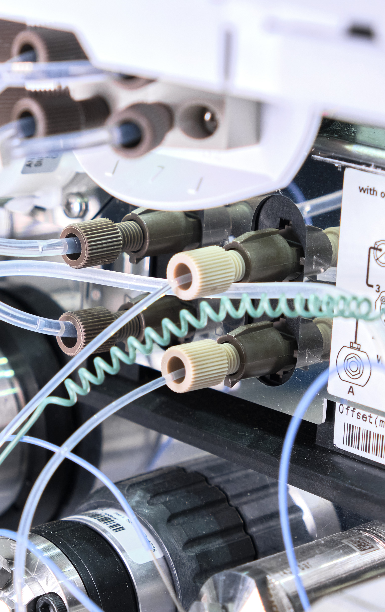
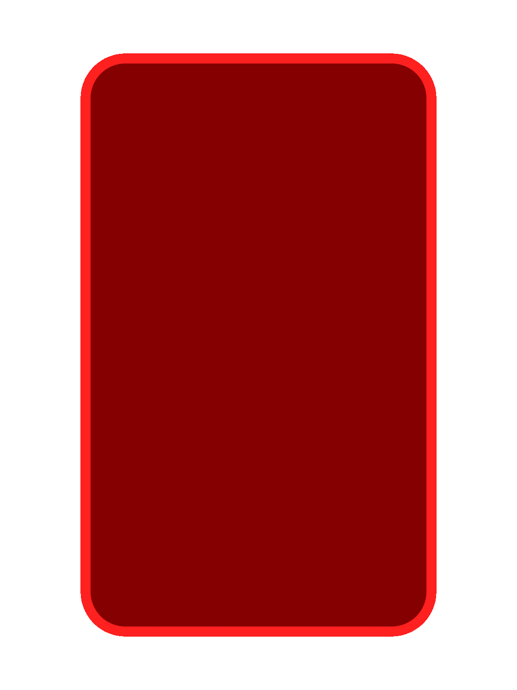
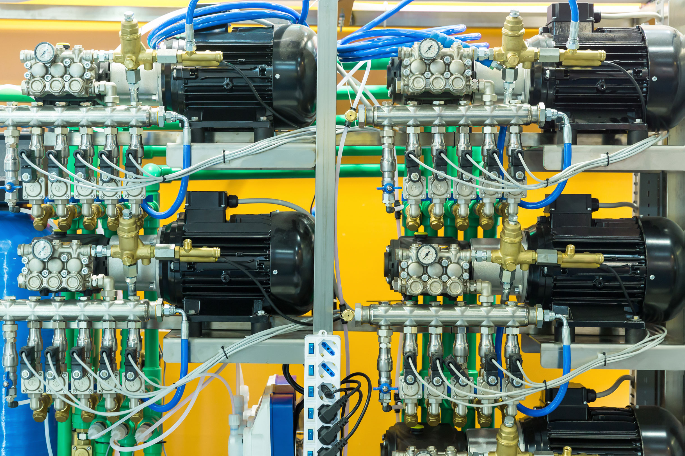

Há pressão suficiente na linha?
Sem alimentação adequada, o circuito pode parecer travado sem estar logicamente errado.



Nesta aula, os seguintes tópicos serão explorados:
tópico
Tópico 1: Diagramas trajeto-passo e trajeto-tempo
tópico
Tópico 2: Método intuitivo de circuitação
tópico
Tópico 3: Montagem e análise de circuitos pneumáticos básicos


Estudante, nas aulas anteriores, você estudou atuadores, válvulas, acionamentos, retorno por mola, dupla pilotagem e simbologia. Agora, a conversa avança: não basta reconhecer o componente, é preciso entender como os movimentos acontecem em sequência.
E, antes de falar em diagrama, vale lembrar uma ideia importante: os sinais nos comandos pneumáticos obedecem à lógica binária, isto é, trabalham com dois estados principais, ativo ou inativo, pressurizado ou não pressurizado.
É por isso que operações lógicas como OU, E e NÃO aparecem em circuitos pneumáticos. Quando a saída depende apenas das entradas do instante atual, temos um circuito combinatório, já quando depende também da etapa anterior e da ordem do ciclo, temos um circuito sequencial, normalmente associado à memória e temporização.
É exatamente nesse ponto que entram os diagramas de sequência. Eles permitem prever o comportamento do sistema antes da montagem, facilitando a leitura do ciclo, a identificação de sinais e a análise de possíveis conflitos.
Como destacam Filho e Santos (2018), interpretar circuitos pneumáticos não é apenas reconhecer símbolos, mas compreender a função que cada componente exerce na operação. Na prática, isso significa que o circuito precisa ser pensado como uma sequência lógica e não como um conjunto de peças isoladas.
O diagrama trajeto-passo representa a movimentação de um ciclo de trabalho por fases. Ele mostra quem se move, em qual ordem e em que estado cada atuador permanece em cada passo do ciclo. O diagrama trajeto-passo aparece como a representação central do desenvolvimento do ciclo completo (Fialho, 2011).
Para descrever um ciclo pneumático, algumas convenções devem ser mantidas:
Os atuadores são indicados por letras maiúsculas, como A, B e C.
O sinal + indica avanço da haste.
O sinal − indica recuo.
Movimentos simultâneos podem ser indicados entre parênteses, e movimentos separados por vírgula.
Botões de partida podem ser representados por m ou PM.
Os fins de curso aparecem em letra minúscula seguida de 0 e 1, como a0, a1, b0 e b1.
Vamos pensar em uma sequência simples: A+, B+, C+, A-, (B-, C-), representada na Figura 1.

Ao observar essa sequência, você já consegue responder perguntas importantes em cada fase de um ciclo:
Quem inicia o ciclo?
Qual etapa vem depois?
Qual fim de curso libera o próximo movimento?
Em que momento o ciclo retorna à condição inicial.
Perceba como o diagrama trajeto-passo organiza o raciocínio antes mesmo da montagem. Sem ele, o circuito pode até ser conectado, mas a chance de erro cresce bastante.
A Figura 2 nos ajuda a entender melhor como funciona esse diagrama aplicado com as simbologias vistas nas aulas anteriores.

Segundo Prudente (2015), esses diagramas são importantes porque ajudam a:
Eles também dialogam diretamente com a ideia de circuito sequencial. Em um circuito sequencial, a saída depende não apenas da entrada atual, mas também do estado anterior do sistema. Isso explica por que, em pneumática, a ordem dos movimentos é tão importante e por que válvulas biestáveis 4/2 ou 5/2 podem funcionar como elementos de memória (Prudente, 2015; Fialho, 2011).
Observe a sequência A+, B+, B−, A−. Monte o diagrama trajeto-passo e responda:
Estudante, neste tópico, você viu que a circuitação pneumática começa no raciocínio. O diagrama trajeto-passo organiza a ordem dos movimentos. O trajeto-tempo acrescenta a dimensão temporal do ciclo. Juntos, eles transformam uma ideia de automação em uma sequência clara, legível e pronta para ser convertida em circuito.
No próximo tópico, você vai pegar essa sequência e transformá-la em lógica de comando.
Durante a preparação de uma bancada pneumática, uma estudante precisou organizar a sequência de movimentos A+, B+, B−, A− antes de iniciar a montagem. O objetivo era visualizar apenas a ordem lógica das etapas do ciclo, sem se preocupar ainda com detalhes de ligação física.
Assinale a alternativa que indica corretamente o recurso mais adequado para essa finalidade.
A alternativa A é a correta.
Justificativa: O diagrama trajeto-passo é utilizado para representar a sequência lógica dos movimentos dos atuadores ao longo das fases do ciclo. Ele ajuda o estudante a visualizar a ordem das etapas antes da montagem do circuito.

Estudante, agora que a sequência está clara, surge a pergunta prática: como transformar essa lógica em circuito?
É aqui que entra o método intuitivo de circuitação.
Conforme já visto em materiais anteriores, cilindros, válvulas direcionais, acionamentos mecânicos, pilotagem pneumática e memória de válvula não são conteúdos separados. Eles se encaixam para formar o comando do sistema. Por isso, o método intuitivo funciona como uma ponte entre a leitura do ciclo e a montagem do circuito.
O método intuitivo é uma forma organizada de construir o circuito a partir da sequência desejada. Em vez de começar ligando mangueiras, você parte de uma pergunta simples: que componente precisa atuar para a próxima fase acontecer?
Na prática, segundo Fialho (2011), isso significa olhar para o ciclo e identificar:

Perceba que o raciocínio continua o mesmo do diagrama trajeto-passo: cada fase precisa ter uma causa clara e um efeito claro. Quando isso não acontece, o circuito pode até parecer correto, mas tende a apresentar travamento, inversão de comando ou falha de sequência.
Para Prudente (2015) e Fialho (2011), um caminho simples para aplicar o método intuitivo é este:
Vamos pensar em um exemplo simples: A+, B+, B−, A−.
Ao olhar para essa sequência, você já consegue montar uma linha de raciocínio:

A deve avançar primeiro.
Quando A chegar ao fim do curso a1, surge o sinal para B avançar.
Quando B chegar ao fim do curso b1, o próximo comando será o retorno de B.
Quando B retornar ao fim de curso b0, surge o sinal para A retornar.
Depois disso, A retorna ao fim de curso a0 e o ciclo se encerra, ou continua se a0 for o sinal para A avançar novamente.
Parece simples, e de fato é simples quando o raciocínio está bem organizado. O erro costuma aparecer quando você tenta montar o circuito antes de definir quem gera cada sinal e em que momento esse sinal deve desaparecer.
Junto a tudo isso, para montar e analisar corretamente um circuito pneumático, é indispensável entender o comportamento dos sinais de comando.
Em circuitação pneumática, três comportamentos merecem atenção especial:
Sinal contínuo: permanece ativo em mais de uma fase do ciclo.
Sinal instantâneo: aparece apenas no momento da mudança entre duas etapas.
Sinal bloqueador: mantém o comando ativo indevidamente e impede o avanço da sequência.
Esse ponto é decisivo porque muitos circuitos parecem corretos no papel, mas travam na prática justamente porque um fim de curso permanece acionado por mais tempo do que deveria (Filho; Santos, 2018).
Isso acontece, por exemplo, quando o atuador chega ao fim do curso, mantém a válvula pressionada e o circuito passa a receber um comando que não “desliga” no momento certo. Em vez de liberar a próxima fase, ele prende a lógica do sistema.
Esse é um detalhe muito importante, porque mostra que a automação pneumática não depende apenas de ter os componentes corretos, mas de fazer esses componentes conversarem na ordem e no tempo adequados (Rollins, 2004).
Para identificar esses sinais, vamos a um exemplo prático por meio do diagrama trajeto-passo? Imagine um ciclo A+, B+, C+, B-, A-, C-, agora construa o diagrama de trajeto passo. Ele ficará igual à Figura 3.

Percebe-se que os sinais a0, a1, b0, b1, c0 e c1 são sinais contínuos; a1 e b0 são sinais bloqueadores e não há sinais instantâneos.
Provavelmente, a pergunta que você se faz agora é: como os sinais a1 e b0 podem ser contínuos e bloqueadores ao mesmo tempo? A resposta é simples, para ser bloqueador, basta ser contínuo (permanecer ativo) durante o ciclo de avanço e recuo de um atuador. Como acontece com os sinais a1 e b0.
Para Filho e Santos (2018), o método intuitivo funciona muito bem em:
Circuitos simples com um atuador.
Sequências curtas com dois atuadores.
Comandos básicos manuais ou semiautomáticos.
Exercícios introdutórios de circuitação.
Circuitos sem sinais bloqueadores.
Seu maior valor didático é fazer você enxergar a relação entre:
sequência → sinal → válvula → movimento
Quando esse encadeamento fica claro, a interpretação do circuito melhora muito. E esse é justamente o tipo de raciocínio que prepara você para métodos mais estruturados de circuitação.
Estudante, neste tópico, você viu que o método intuitivo é a ponte entre a sequência e a montagem. Ele organiza a lógica do circuito, ajuda a identificar sinais, define a função de cada válvula e mostra como o comando evolui ao longo do ciclo.
Você também percebeu um limite importante: quando os sinais permanecem ativos além do necessário, o circuito pode travar. E é justamente essa dificuldade que prepara o caminho para métodos mais robustos de resolução.
Em uma prática de circuitação pneumática, o atuador chegou ao fim de curso, mas a válvula permaneceu acionada e a próxima etapa do ciclo não aconteceu. Ao analisar a lógica do sistema, a equipe percebeu que um sinal continuava ativo além do momento adequado, impedindo o prosseguimento da sequência.
Assinale a alternativa correta.
A alternativa B é a correta.
Justificativa: O sinal bloqueador é aquele que permanece ativo indevidamente e impede o avanço da sequência. Esse tipo de situação é comum quando um fim de curso continua acionado além do necessário.
Estudante, depois de organizar a sequência e transformar o ciclo em lógica de comando, chegou o momento da montagem.
É aqui que o circuito sai do papel e vai para a bancada. E é justamente nessa etapa que pequenos erros ficam visíveis: uma ligação invertida, um escape obstruído, um fim de curso mal posicionado ou uma pilotagem insuficiente podem mudar completamente o comportamento do sistema.
Conforme já visto em materiais anteriores, o diagrama não existe para “desenhar bonito”. Ele existe para mostrar a função. Por isso, a montagem precisa começar pela leitura correta do circuito e não pelo improviso.
Antes de conectar qualquer componente, você precisa identificar:

Esse cuidado é importante porque a leitura correta da válvula depende de entender por onde o fluido entra, por onde ele sai e em que posição o componente está representado. Quando essa leitura falha, o circuito pode até ser montado, mas dificilmente vai funcionar como previsto (Rollins, 2004).
Nos estudos iniciais de circuitação pneumática, três montagens aparecem com mais frequência (Prudente, 2015).
No circuito com cilindro de simples efeito e válvula 3/2, o avanço acontece por pressão e o retorno ocorre por mola. Esse é um circuito muito didático, porque ajuda o estudante a visualizar a entrada de ar, a realização do movimento e o alívio da pressão para o retorno.
No circuito com cilindro de dupla ação e válvula 5/2, tanto o avanço quanto o retorno são comandados. Aqui, você percebe com mais clareza como a comutação da válvula define qual câmara recebe pressão e qual câmara exaure.
Já no circuito com fim de curso, o comportamento muda de nível. O próximo movimento deixa de depender apenas da ação do operador e passa a depender da confirmação física de posição do atuador. É nesse ponto que a pneumática começa a assumir uma lógica sequencial mais evidente.
Como já visto em materiais anteriores, o cilindro de simples efeito trabalha com retorno por mola, enquanto o de duplo efeito recebe pressão nos dois sentidos. Da mesma forma, válvulas 3/2 e 5/2 alteram diretamente a forma de comandar o movimento. Por isso, a escolha do circuito básico depende sempre da função que se deseja executar (Fialho, 2011).
Para analisar corretamente um circuito, uma separação ajuda muito:
Quando se misturam essas duas funções, o circuito parece mais confuso do que realmente é. Quando separam ambas as leituras, a análise fica muito mais clara.
Na prática, a linha de potência responde pela força e pelo deslocamento. Já a linha de comando responde pela lógica do ciclo. Uma faz o atuador se mover; a outra decide quando esse movimento deve começar, parar ou mudar de sentido (Prudente, 2015).
A primeira pergunta não deve ser “o cilindro estragou?”. A análise precisa seguir uma ordem descrita por autores como Prudente (2015) e Fialho (2011).
Sem alimentação adequada, o circuito pode parecer travado sem estar logicamente errado.
Às vezes, o problema não está no atuador, mas na pilotagem.
Sem exaustão adequada, o movimento pode ficar lento ou incompleto.
Se ele não for acionado no ponto esperado, a próxima etapa não será liberada.
Essa é uma das perguntas mais importantes na análise de circuitação pneumática.
Uma ligação invertida entre utilização, pilotagem e escape já é suficiente para alterar todo o comportamento do sistema.
Rollins (2004) ajuda a lembrar que a qualidade do ar, a vazão e as perdas influenciam diretamente o comportamento do sistema. Na bancada, isso aparece como lentidão, resposta irregular, curso incompleto ou repetição instável.
Conforme já visto em materiais anteriores, a pressão está ligada à força e a vazão está ligada à velocidade. Isso significa que nem toda lentidão é erro lógico. Em muitos casos, o circuito está corretamente montado, mas a resposta fica ruim por causa de vazão insuficiente, estrangulamento indevido ou componente mal dimensionado.
Na montagem de circuitos pneumáticos básicos, algumas boas práticas ajudam muito:
Parece simples, mas é justamente esse tipo de cuidado que separa uma montagem organizada de uma tentativa por erro (Fialho, 2011).
Em circuitação pneumática, ler a simbologia antes da montagem não é detalhe, é procedimento. A padronização existe justamente para reduzir erro de interpretação, retrabalho e falhas de manutenção. Por isso, antes de pressurizar qualquer circuito, confira a posição da válvula, as vias de alimentação, utilização e escape, e o sentido esperado do movimento.
Estudante, neste tópico, você viu que montagem e análise caminham juntas. Montar um circuito pneumático básico exige leitura correta do diagrama, identificação das linhas de potência e de comando, atenção aos fins de curso e capacidade de diagnóstico.
Mais do que fazer o circuito funcionar, o estudante precisa entender por que ele funciona, por que ele trava e o que precisa ser corrigido. É esse olhar que transforma a montagem em aprendizagem técnica e prepara o caminho para técnicas mais avançadas de circuitação.
Durante a montagem de um circuito pneumático básico, um estudante acionou o comando de partida, mas o atuador não avançou. Antes de substituir componentes, o professor orientou a turma a iniciar a análise pelas verificações mais básicas do sistema.
Assinale a alternativa que apresenta a conduta inicial mais adequada.
A alternativa C é a correta.
Justificativa: Na análise inicial de um circuito pneumático, o mais adequado é verificar primeiro se há alimentação de ar e se a válvula está recebendo o sinal de comando correto. Só depois disso faz sentido partir para diagnósticos mais específicos.
Sua próxima etapa é assistir à videoaula, onde você poderá ver os conceitos em ação e ampliar sua compreensão. Essa é uma ótima oportunidade para reforçar o aprendizado.
Assista a videoaula
FIALHO, A. B. Automação Pneumática: projetos, dimensionamento e análise de circuitos. 7. ed. São Paulo: Érica, 2011.
FILHO, E. S. D. S.; SANTOS, B. K. Sistemas hidráulicos e pneumáticos. Porto Alegre: Sagah, 2018.
PRUDENTE, F. Automação industrial pneumática: teoria e aplicações. Rio de Janeiro: LTC, 2015.
ROLLINS, J. P. Manual de ar comprimido e gases. 1. ed. São Paulo: Pearson, 2004.
Você acaba de concluir uma etapa importante da sua jornada. Agora é hora de seguir em frente!